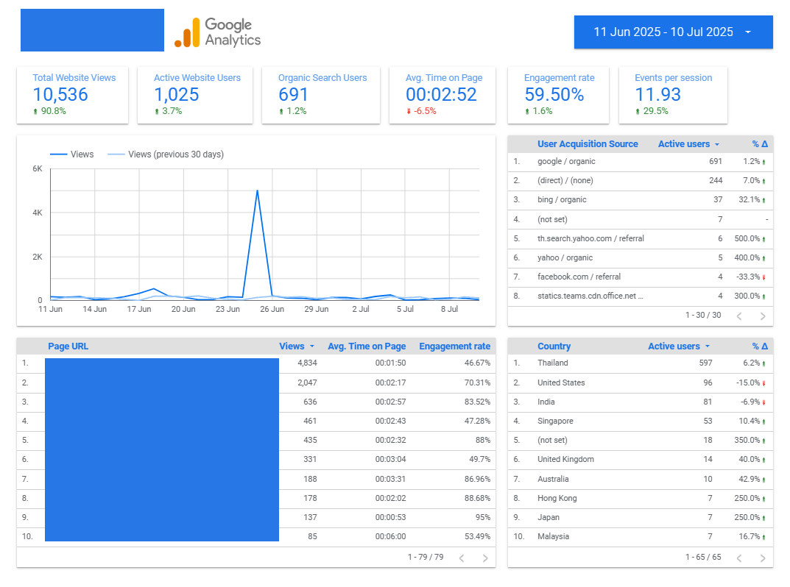
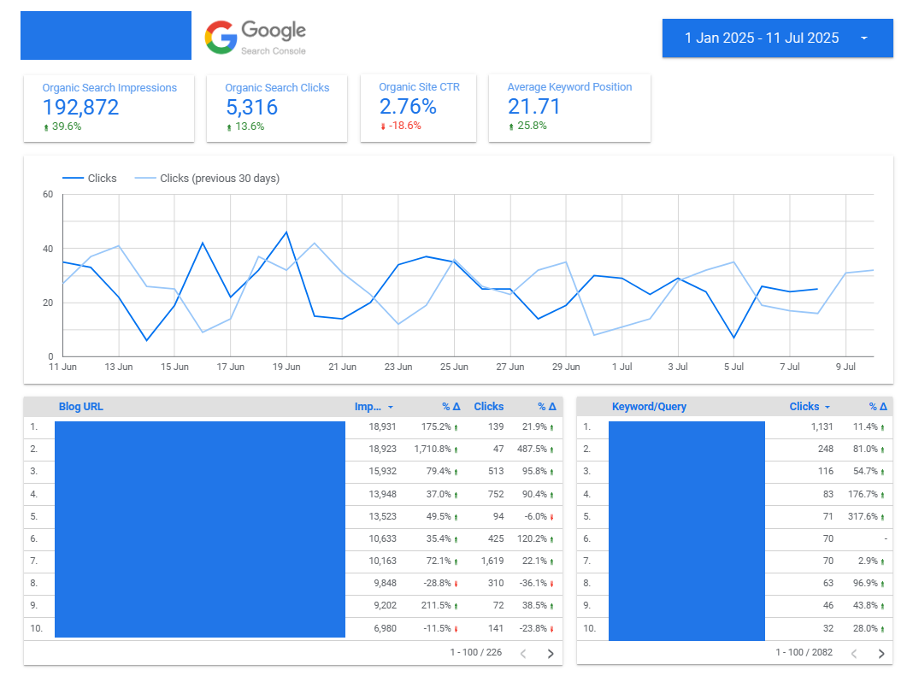
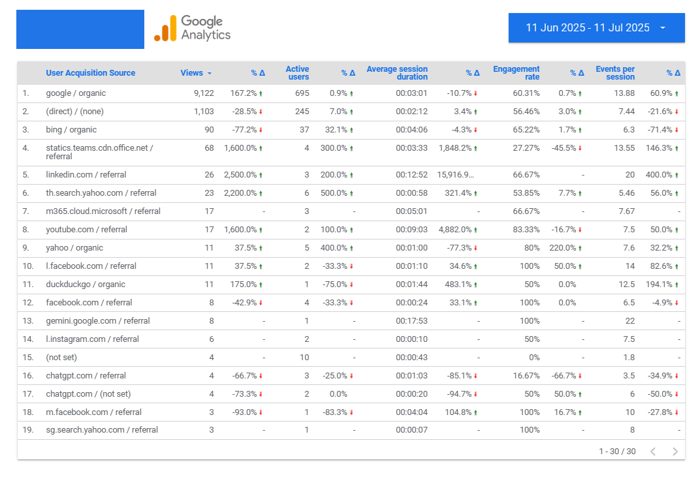
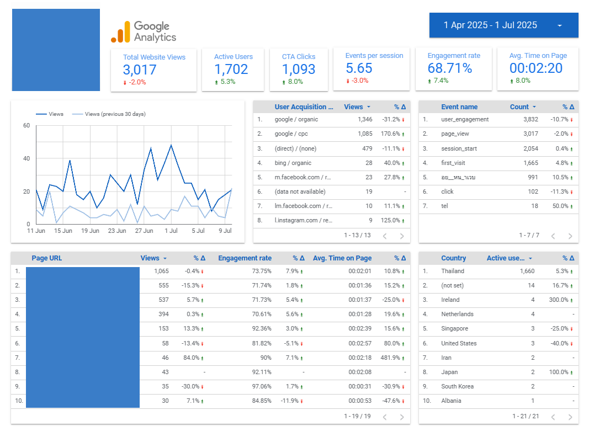
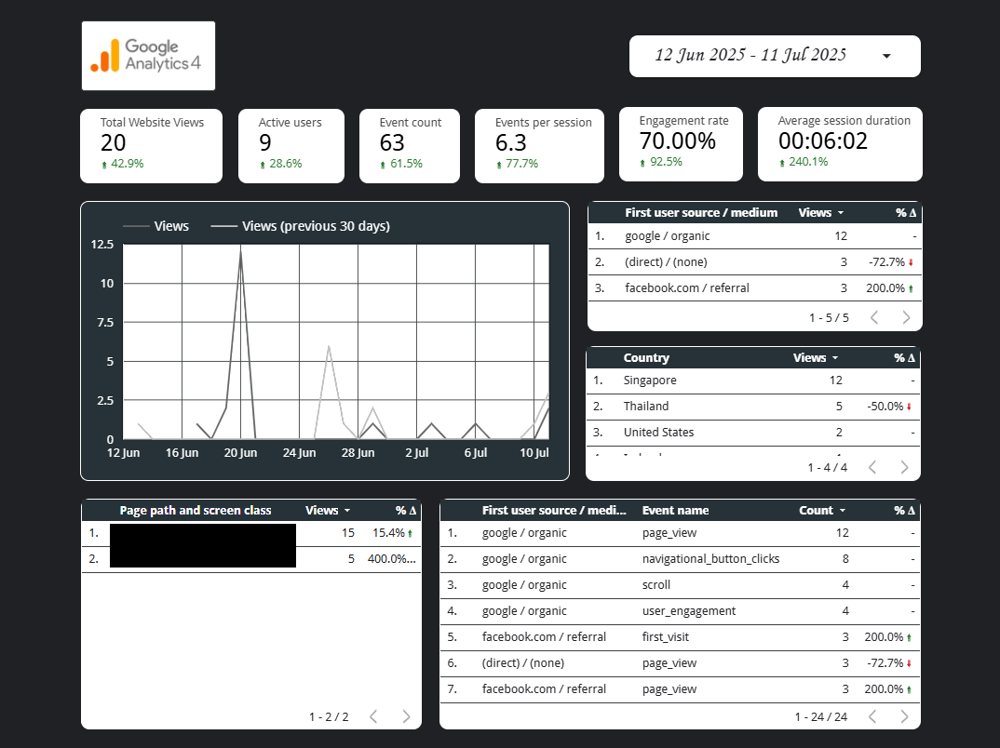

Data and Analytics
Explore how I empower businesses with actionable data visibility through custom-built, automated dashboards.
With precision and clarity, I integrate GA4 and Google Search Console to reveal insights into traffic sources, user behavior, and key events.
These insights help shape smarter, data-backed website improvement strategies that drive meaningful and measurable results.
Custom Website Analytics Dashboard for eKYC Platform


Web Analytics Dashboard for B2B Roofing Product Manufacturer
Real-Time Web Traffic Dashboard for Personal Portfolio Site
This site uses Google Analytics 4 to understand visitor behavior and improve performance. No personal data is collected or stored.